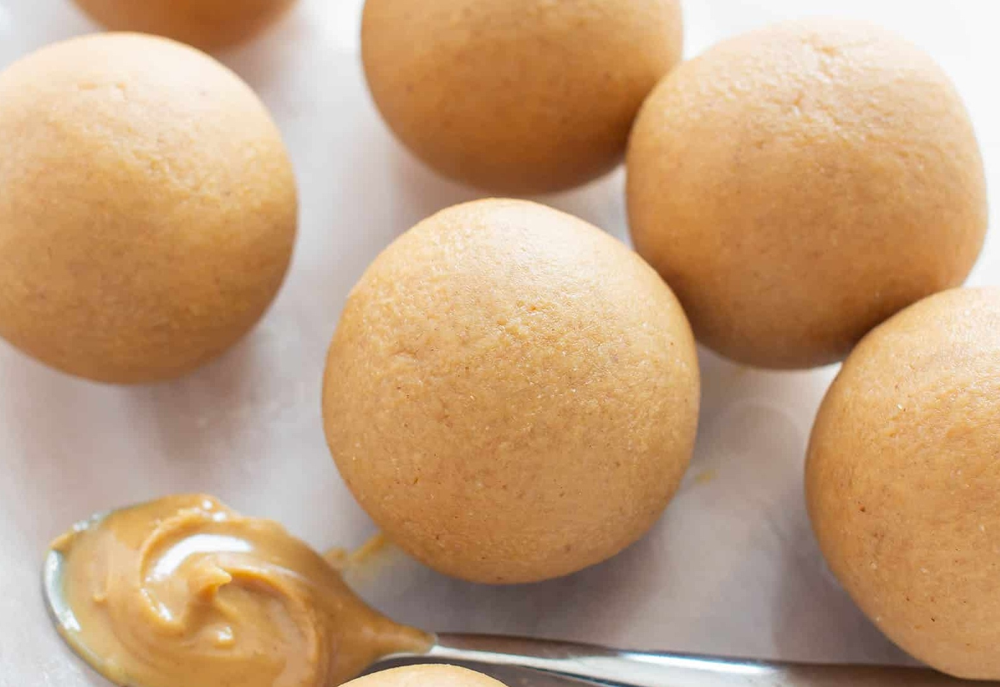

Peanut Butter Balls

Description
These peanut butter balls are easy to make and pleasing to the taste buds. Once you're done making your won, you'll be glad you gave them a shot!
Ingredients
-
1 cup unsalted creamy peanut butter
-
1/2 cup coconut flour
-
3 tbsp maple syrup
Steps
-
Line a baking sheet with wax or parchment and set it aside.
-
In a medium mixing bowl, add the peanut butter, coconut flour, and maple syrup.
-
Use a fork to stir the items in the bowl until well mixed.
-
Still in the bowl, use a silicone spatula to fold until well incorporated and thickened.
-
Using a small cookie scoop, scoop and drop peanut butter balls onto the prepared baking sheet. Make sure to space them evenly apart.
-
The peanut butter balls are ready for consumption and can be stored via the fridge, in an airtight container.